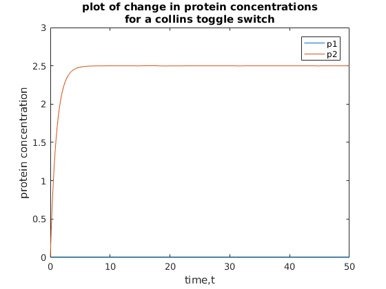
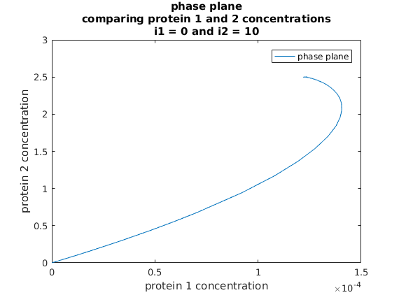

Contents
collins toggle switch
Q2a
function solve(p0)
trange = [0, 50];
p0 = [0 0];
[t, p] = ode45(@derivp, trange, p0);
plot(t,p)
hold on
legend('p1','p2')
xlabel('time,t')
ylabel('protein concentration')
title({'plot of change in protein concentrations','for a collins toggle switch'})

Q2b
figure
plot(p(:,1),p(:,2))
hold on
legend('phase plane')
xlabel('protein 1 concentration')
ylabel('protein 2 concentration')
title({'phase plane','comparing protein 1 and 2 concentrations','i1 = 0 and i2 = 10'})

end
derivative function for each protein
function dpdt = derivp(t,p)
a1 = 3;
a2 = 2.5;
i1 = 0;
i2 = 10;
b = 4;
g = 4;
dpdt = zeros(2,1);
dpdt(1) = (a1/(1+((p(2)/1+i2)^b))) - p(1);
dpdt(2) = (a2/(1+((p(1)/1+i1)^g))) - p(2);
end